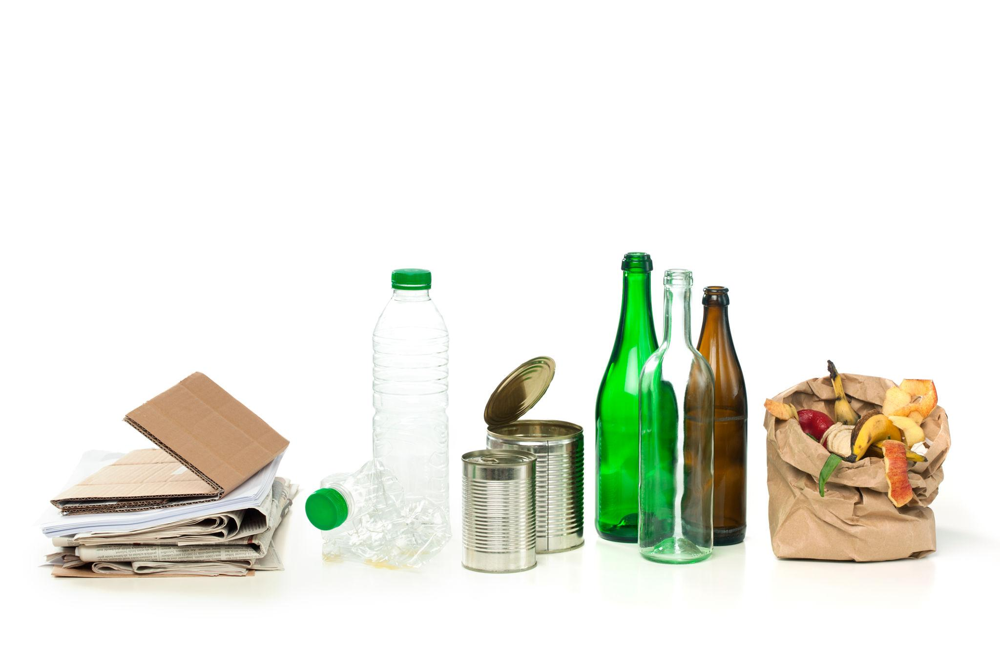
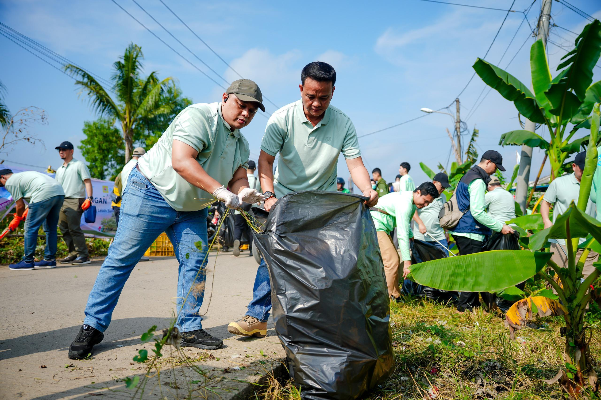

Basura Alert Campaign
Tamang Oras,
Malinis na Bukas.
Empowering communities with verified waste collection schedules, proper segregation guidance, and timely reminders for a cleaner, greener future.
Your Waste Management Dashboard
A cleaner routine, in one place
Stay on top of collection days with real-time countdowns and smart reminders.
Core Features
Designed for everyday community action
Practical tools to build sustainable waste management habits.
Smart Collection Schedule
Access centralized, verified community waste collection information. Know exactly when biodegradable, recyclable, residual, and special waste will be collected in your area.
View Schedule
Real-Time Countdown
Never miss collection day again. Track the exact time remaining until the next garbage pickup with live countdowns and smart reminder notifications.
Set Reminders
Simple Process
Four simple steps to a cleaner community
Join the movement for sustainable waste management.
Check the Schedule
Verify your community's waste collection days and times for all waste categories.
Learn Proper Segregation
Use our interactive guide to sort waste correctly into biodegradable, recyclable, residual, and special categories.
Prepare for Collection
Set reminders and prepare your properly segregated waste before collection time.
Report & Act
Report concerns about missed collections or improper disposal to help maintain community standards.
Ready to keep your community clean?
Start today with verified schedules, smart reminders, and proper waste segregation guidance.